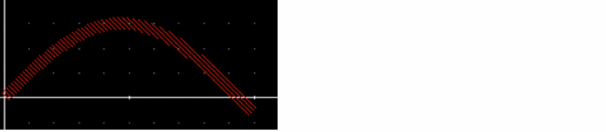
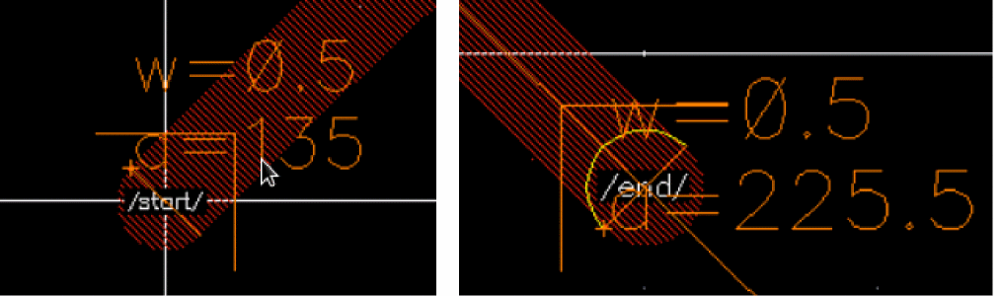

phoAddWaveguidePorts
phoAddWaveguidePorts( ccPath t_startPortName t_startPortDirection t_endPortName t_endPortDirection [ ?n_portPinWidthn_portPinWidth][ ?startWidthf_width] [ ?endWidthf_width] ) =>l_port/ nil
Description
(Virtuoso Photonics Option) Adds circular optical ports at both ends of a ccPath. The ports have the same layer-purpose pair as the ccPath. For both start and end ports, the net, terminal, and pin names use the specified port name. Terminal direction is taken from the corresponding portDirection argument.
The optional portPinWidth (in user units) allows an over-ride of the port figure width. This is used for tapered waveguides to avoid very large shapes that might extend outside of the boundary of the original path port figure shapes.
Arguments
Value Returned
Example
cv = geGetEditCellView()
ccCurve = ccCreateCurve( "t" "3*sin(t/3.0)" 0:10)
ccPath = ccCreatePath(cv list("waveguide" "drawing") list(ccCurve) ?defaultWidth 0.5)
ccGenFigs(ccPath)

phoAddWaveguidePorts(ccPath "start" "inputOutput" "end" "inputOutput”)
(
(nil xy
(0.0 0.0) name "start" direction "inputOutput" pinFigId db:0x211fbe1b facet
(nil width 0.5 angle 135.0 radius 0.0)
)
(nil xy
(10.0 -0.572) name "end" direction "inputOutput" pinFigId db:0x211fbe1c facet
(nil width 0.5 angle 225.53 radius -43.31903
)
)
)

Related Topics
Return to top